기계설계산업기사 (2017-08-26 기출문제)
1과목: 기계가공법 및 안전관리
1. 선반의 가로 이송대에 4mm 리드로 100등분 눈금의 핸들이 달려 있을 때 지름 38mm의 환봉을 지름 32mm 절삭하려면 핸들의 눈금은 몇 눈금을 돌리면 되겠는가?
- 35
- 70
- 75
- 90
(정답률: 64%)

2. 연삭가공에서 내면연삭에 대한 설명으로 틀린 것은?
- 외경 연삭에 비하여 숫돌의 마모가 많다.
- 외경 연삭보다 숫돌 축의 회전수가 느려야 한다.
- 연삭숫돌의 지름은 가공물의 지름보다 작아야 한다.
- 숫돌 축은 지름이 작기 때문에 가공물의 정밀도가 다소 떨어진다.
(정답률: 52%)
3. 동일직경 3개의 핀을 이용하여 수나사의 유효지름을 측정하는 방법은?
- 광학법
- 삼침법
- 지름법
- 반지름법
(정답률: 91%)
4. 비교 측정방법에 해당되는 것은?
- 사인 바에 의한 각도 측정
- 버니어캘리퍼스에 의한 길이 측정
- 롤러와 게이지 블록에 의한 테이퍼 측정
- 공기 마이크로미터를 이용한 제품의 치수 측정
(정답률: 53%)
5. 호닝 작업의 특징으로 틀린 것은?
- 정확한 치수가공을 할 수 있다.
- 표면정밀도를 향상 시킬 수 있다.
- 호닝에 의하여 구멍의 위치를 자유롭게 변경하여 가공이 가능하다.
- 전 가공에서 나타난 테이퍼, 진원도 등에 발생한 오차를 수정할 수 있다.
(정답률: 73%)
6. 주축(spindle)의 정지를 수행하는 NC-code는?
- M02
- M03
- M04
- M⑤
(정답률: 56%)
7. 합금공구강에 대한 설명으로 틀린 것은?(문제 오류로 가답안 발표시 3번으로 발표되었지만 확정답안 발표시 전항 정답 처리 되었습니다. 여기서는 가답안인 3번을 누르면 정답 처리 됩니다.)
- 탄소공구강에 비해 절삭성이 우수하다.
- 저속 절삭용, 총형 절삭용으로 사용된다.
- 탄소공구강에 Ni, Co 등의 원소를 첨가한 강이다.
- 경화능을 개선하기 위해 탄소공구강에 소량의 합금 원소를 첨가한 강이다.
(정답률: 67%)
8. 측정자의 미소한 움직임을 광학적으로 확대하여 측정하는 장치는?
- 옵티미터(optimeter)
- 미니미터(minimeter)
- 공기 마이크로미터(air micrometer)
- 전기 마이크로미터(electrical micrometer)
(정답률: 72%)
9. TiC 입자를 Ni 혹은 Ni과 Mo를 결합제로 소결한 것으로 구성인선이 거의 발생하지 않아 공구수명이 긴 절삭공구 재료는?
- 서멧
- 고속도강
- 초경합금
- 합금공구강
(정답률: 51%)
10. 연삭깊이를 깊게 하고 이송속도를 느리게 함으로써 재료 제거율을 대폭적으로 높인 연삭방법은?
- 경면(mirror) 연삭
- 자기(magnetic) 연삭
- 고속(high speed) 연삭
- 크립 피드(creep feed) 연삭
(정답률: 78%)
11. 가연성 액체(알코올, 석유, 등유류)의 화재 등급은?
- A급
- B급
- C급
- D급
(정답률: 70%)
12. 선반의 주축을 중공축으로 할 때의 특징으로 틀린 것은?
- 굽힘과 비틀림 응력에 강하다.
- 마찰열을 쉽게 발산시켜 준다.
- 길이가 긴 가공물 고정이 편리하다.
- 중량이 감소되어 베어링에 작용하는 하중을 줄여준다.
(정답률: 48%)
13. 기어 절삭법이 아닌 것은?
- 배럴에 의한 법(barrel system)
- 형판에 의한 법(templet system)
- 창성에 의한 법(generated tool system)
- 총형 공구에 의한 법(formed tool system)
(정답률: 70%)
14. 지름이 75mm의 탄소강을 절삭속도 150m/min으로 가공하고자 한다. 가공 길이 300mm, 이송은 0.2mm/rev 할 때 1회 가공 시 가공시간은 약 얼마인가?
- 2.4분
- 4.4분
- 6.4분
- 8.4분
(정답률: 45%)
15. 표면 거칠기의 측정법으로 틀린 것은?
- NPL식 측정
- 촉침식 측정
- 광 절단식 측정
- 현미 간접식 측정
(정답률: 53%)
16. 수직 밀링머신의 주요 구조가 아닌 것은?
- 니
- 칼럼
- 방진구
- 테이블
(정답률: 75%)
17. 드릴을 가공할 때, 가공물과 접촉에 의한 마찰을 줄이기 위하여 절삭날 면에 주는 각은?
- 선단각
- 웨브각
- 날 여유각
- 홈 나선각
(정답률: 70%)
18. 밀링머신의 테이블 위에 설치하여 제품의 바깥부분을 원형이나 윤곽가공 할 수 있도록 사용되는 부속장치는?
- 더브테일
- 회전 테이블
- 슬로팅 장치
- 래크 절삭 장치
(정답률: 68%)
19. 높은 정밀도를 요구하는 가공물, 각종 지그 등에 사용하며 온도 변화에 영향을 받지 않도록 항온항습실에 설치하여 사용하는 보링 머신은?
- 지그 보링 머신(jig boring machine)
- 정밀 코어 머신(fine boring machine)
- 코어 보링 머신(core boring machine)
- 수직 보링 머신(vertical boring machine)
(정답률: 61%)
20. 밀링머신 테이블의 이송속도 720mm/min, 커터의 날수 6개, 커터 회전수가 600rpm일 때, 1날 당 이송량은 몇 mm 인가?
- 0.1
- 0.2
- 3.6
- 7.2
(정답률: 62%)
2과목: 기계제도
21. 강구조물(steel structure) 등의 치수 표시에 관한 KS 기계 제도 규격에 관한 설명으로 틀린 것은?
- 구조선도에서 절점 사이의 치수를 표시할 수 있다.
- 형상, 강관 등의 치수를 각각의 도형에 연하여 기입할 때 길이의 치수도 반드시 나타내야 한다.
- 구조선도에서 치수는 부재를 나타내는 선에 연하여 직접 기입할 수 있다.
- 등변 ㄱ형상 경우 “L 100×100×5-1500”과 같이 나타낼 수 있다.
(정답률: 48%)
22. 그림에서 나타난 기하공차 도시에 대해 가장 올바르게 설명한 것은?
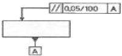
- 임의의 평면에서 평행도가 기준면 A에 대해
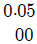
mm 이내에 있어야 한다. - 임의의 평면 100mm×100mm에서 평행도가 기준면 A에 대해
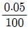
mm 이내에 있어야 한다. - 지시하는 면 위에서 임의로 선택한 길이 100mm에서 평행도가 기준면 A에 대해 0.⑤mm이내에 있어야 한다.
- 지시한 화살표를 중심으로 100mm 이내에서 평행도가 기준면 A에 대해 0.⑤mm 이내에 있어야 한다.
(정답률: 64%)
23. 헬리컬 기어 제도에 대한 설명으로 틀린 것은?
- 잇봉우리원은 굵은 실선으로 그린다.
- 피치원은 가는 1점 쇄선으로 그린다.
- 이골원은 단면 도시가 아닌 경우 가는 실선으로 그린다.
- 축에 직각인 방향에서 본 정면도에서 단면 도시가 아닌 경우 잇줄 방향은 경사진 3개의 가는 2점 쇄선으로 나타낸다.
(정답률: 70%)
24. 그림과 같은 환봉의 “A“ 면을 선반 가공할 때 생기는 표면의 줄무늬 방향 기호로 가장 적합한 것은?(오류 신고가 접수된 문제입니다. 반드시 정답과 해설을 확인하시기 바랍니다.)
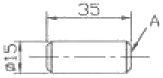
- C
- M
- R
- X
(정답률: 70%)
25. 구름 베어링의 상세한 간략 도시방법에서 복렬 자동 조심 볼 베어링의 도시기호는?
(정답률: 65%)
26. 기하공차의 도시 방법에서 위치도를 나타내는 것은?
(정답률: 83%)
27. 그림과 같이 제 3각법으로 나타낸 정면도와 평면도에 가장 적합한 우측면도는?
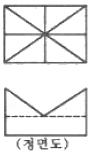
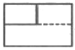
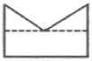
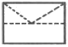
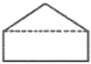
(정답률: 77%)
28. 도면에 마련되는 양식의 종류 중 작성부서, 작성자, 승인자, 도면명칭, 도면번호 등을 나타내는 양식은?
- 표제란
- 부품란
- 중심마크
- 비교눈금
(정답률: 84%)
29. 그림과 같은 정투상도(정면도와 평면도)에서 우측면도로 가장 적합한 것은?
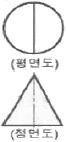
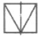
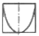
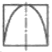
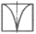
(정답률: 63%)
30. 기하학적 형상의 특성을 나타내는 기호 중 자유상태 조건을 나타내는 기호는?
- Ⓟ
- Ⓜ
- Ⓕ
- Ⓛ
(정답률: 68%)
31. 필릿 용접 기호 중 화살표 반대쪽에 필릿 용접을 지시하는 것은?
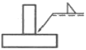
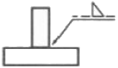
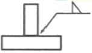
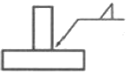
(정답률: 70%)
32.
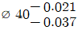
의 구멍과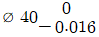
축 사이의 최소 죔새는?- 0.⑤3
- 0.037
- 0.021
- 0.0⑤
(정답률: 59%)
33. 그림과 같은 도면에서 가는 실선이 교차하는 대각선 부분은 무엇을 의미하는가?
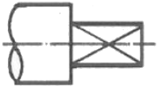
- 평면이라는 뜻
- 나사산 가공하는 뜻
- 가공에서 제외하는 뜻
- 대각선의 홈이 파여 있다는 뜻
(정답률: 85%)
34. V-블록을 3각법으로 정투상한 그림과 같은 도면에서 “A”부분의 치수는?
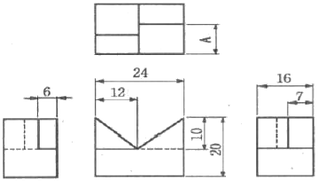
- 6
- 7
- 9
- 10
(정답률: 84%)
35. 재료 기호가 “SS 275”로 나타났을 때 이 재료의 명칭은?
- 탄소강 단강품
- 용접 구조용 주강품
- 기계 구조용 탄소 강재
- 일반 구조용 압연 강재
(정답률: 74%)
36. 치수 기입의 원칙에 관한 설명으로 옳지 않은 것은?
- 치수는 되도록 주 투상도에 집중하여 기입한다.
- 치수는 되도록 공정마다 배열을 분리하여 기입한다.
- 치수는 기능, 제작, 조립을 고려하여 명료하게 기입한다.
- 중요치수는 확인하기 쉽도록 중복하여 기입한다.
(정답률: 84%)
37. 다음 용접기호가 나타내는 용접 작업 명칭은?
- 가장자리 용접
- 표면 육성
- 개선 각이 급격한 V형 맞대기 용접
- 표면 접합부
(정답률: 53%)
38. 도면에서 부분 확대도를 그리는 경우로 가장 적합한 것은?
- 특정한 부분의 도형이 작아서 그 부분의 상세한 도시나 치수기입이 어려울 때 사용한다.
- 도형의 크기가 클 경우에 사용한다.
- 물체의 경사면을 실제 길이로 투상하고자 할 때 사용한다.
- 대상물의 구멍, 홈 등과 같이 그 부분의 모양을 도시하는 것으로 충분한 경우에 사용한다.
(정답률: 82%)
39. 그림과 같은 입체도의 정면도(화살표 방향)로 가장 적합한 것은?
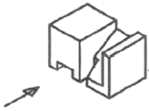
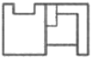
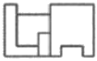
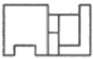
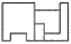
(정답률: 80%)
40. 다음 공ㆍ유압 장치의 조작 방식을 나타낸 그림 중에서 전기 조작에 의한 기호는?
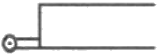
(정답률: 54%)
3과목: 기계설계 및 기계재료
41. 아연을 소량 첨가한 황동으로 빛깔이 금색에 가까워 모조금으로 사용되는 것은?
- 톰백(tombac)
- 델타 메탈(delta metal)
- 하드 블라스(hard brass)
- 문쯔 메탈(muntz metal)
(정답률: 78%)
42. 열가소성 재료의 유동성을 측정하는 시험방법은?
- 로크웰 시험법
- 브리넬 시험법
- 멜트 인덱스법
- 샤르피 시험법
(정답률: 59%)
43. 금속의 결정 구조 중 체심입방격자(BCC)인 것은?
- Ni
- Cu
- Al
- Mo
(정답률: 50%)
44. 담금질한 후 치수의 변형 등이 없도록 심냉처리 해야 하는 강은?
- 실루민
- 문쯔메탈
- 두랄루민
- 게이지강
(정답률: 53%)
45. 탄소 함유량이 약 0.85%C~2.0%C에 해당하는 강은?
- 공석강
- 아공석강
- 과공석강
- 공정주철
(정답률: 46%)
46. 진동에너지를 흡수하는 능력이 우수하여 공작기계의 베드 등에 가장 적합한 재료는?
- 회주철
- 저탄소강
- 고속도공구강
- 18-8스테인리스강
(정답률: 58%)
47. 비정질 합금에 관한 설명으로 틀린 것은?
- 전기 저항이 크다.
- 구조적으로 장거리의 규칙성이 있다.
- 가공경화 현상이 나타나지 않는다.
- 균질한 재료이며, 결정 이방성이 없다.
(정답률: 45%)
48. 노 내에서 Fe-Si, Al 등의 강력한 탈산제를 첨가하여 완전히 탈산시킨 강은?
- 킬드강(killed steel)
- 림드강(rimmed steel)
- 세미킬드강(semi-killed steel)
- 세미림드강(semi-rimmed steel)
(정답률: 68%)
49. 강 표면에 Al을 침투시키는 표면 경화법은?
- 크로마이징
- 칼로라이징
- 실리콘나이징
- 보로나이징
(정답률: 80%)
50. 항공기 재료에 많이 사용되는 두랄루민의 강화 기구는?
- 용질강화
- 시효경화
- 가공경화
- 마텐자이트 변태
(정답률: 64%)
51. 폭(b)×높이(h)=10mm×8mm인 묻 힘 키가 전동축에 고정되어 0.25 kNㆍm의 토크를 전달 할 때, 축지름은 약 몇 mm 이상이어야 하는가? (단, 키의 허용 전단응력은 36MPa 이며, 키의 길이는 47mm이다.)
- 29.6
- 35.3
- 41.7
- 50.2
(정답률: 34%)
52. 래크 공구로 모듈 5, 압력각은 20°, 잇수는 15인 인벌류트 치형의 전위 기어를 가공하려 한다. 이때 언더컷을 방지하기 위하여 필요한 이론 전위량은 약 mm 인가?
- 0.124
- 0.252
- 0.510
- 0.613
(정답률: 18%)
53. 베이링 설치 시 고려해야 하는 예압(preload)에 관한 설명으로 옳지 않은 것은?
- 예압은 축의 흔들림을 적게 하고, 회전 정밀도를 향상시킨다.
- 베어링 내부 틈새를 줄이는 효과가 있다.
- 예압량이 높을수록 예압 효과가 커지고, 베어링 수명에 유리하다.
- 적절한 예압을 적용할 경우 베어링의 강성을 높일 수 있다.
(정답률: 72%)
54. 평벨트 전동에서 유효장력이란 무엇인가?
- 벨트 긴장측 장력과 이완측 장력과의 차를 말한다.
- 벨트 긴장측 장력과 이완측 장력과의 비를 말한다.
- 벨트 긴장측 장력과 이완측 장력의 평균값을 말한다.
- 벨트 긴장측 장력과 이완측 장력의 합을 말한다.
(정답률: 64%)
55. 두 축의 중심선이 어느 각도로 교차되고 그 사이의 각도가 운전 중 다소 변하여도 자유로이 운동을 전달 할 수 있는 축 이음은?
- 플랜지 이음
- 셀러 이음
- 올덤 이음
- 유니버설 이음
(정답률: 66%)
56. 공업 제품에 대한 표준화를 시행 시 여러 장점이 있다. 다음 중 공업제품 표준화와 관련한 장점으로 거리가 먼 것은?
- 부품의 호완성이 유지된다.
- 능률적인 부품생산을 할 수 있다.
- 부품의 품질향상이 용이하다.
- 표준화 규격 제정 시에 소요되는 시간과 비용이 적다.
(정답률: 59%)
57. 두께 10mm의 강판에 지름 24mm의 리벳을 사용하여 1줄 겹치기 이음할 때 피치는 약몇 mm 인가? (단, 리벳에서 발생하는 전단응력은 35.5MPa이고, 강판에 발생하는 인장응력은 42.2MPa이다.)
- 43
- 62
- 55
- 74
(정답률: 38%)
58. 10kN의 물체를 수직방향으로 들어올리기 위해서 아이볼트를 사용하려 할 때, 아이볼트 나사부의 최소 골지름은 약 몇 mm 인가? (단, 볼트의 허용인장응력은 50MPa이다.)(오류 신고가 접수된 문제입니다. 반드시 정답과 해설을 확인하시기 바랍니다.)
- 14
- 16
- 20
- 22
(정답률: 46%)
59. 드럼 지름이 300mm인 밴드 브레이크에서 1kNㆍm의 토크를 제동하려고 한다. 이 때 필요한 제동력은 약 몇 N 인가?
- 667
- 5500
- 6667
- 795
(정답률: 48%)
60. 그림과 같은 스프링 장치에서 전체 스프링 상수 K 는?
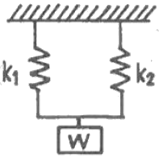
- K = k1 + k2
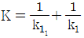
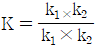
- K = k1×k2
(정답률: 66%)
4과목: 컴퓨터응용설계
61. 매개변수 μ 방향으로 3차 곡선, ν 방향으로 2차 곡선으로 이루어진 Bezier 곡면을 정의하기 위해 필요한 조정점의 개수는?
- 6
- 12
- 24
- 48
(정답률: 51%)
62. CAD 용어에 대한 설명 중 틀린 것은?
- Pan : 도면의 다른 영역을 보기 위해 디스플레이 윈도를 이동시키는 행위
- Zoom : 대상물의 실제 크기(치수 포함)를 확대하거나 축소하는 행위
- Clipping : 필요 없는 요소를 제거하는 방법, 주로 그래픽에서 클리핑 윈도로 정의된 영역 밖에 존재하는 요소들을 제거하는 것을 의미
- Toggle : 명령의 실행 또는 마우스 클릭시마다 On 또는 Off가 번갈아 나타나는 세팅
(정답률: 67%)
63. 다음 중 CAD 소프트웨어가 갖추어야 할 기능으로 가장 거리가 먼 것은?
- 제조 공정 제어
- 데이터 변환
- 화면 제어
- 그래픽 요소 생성
(정답률: 73%)
64. 4개의 경계곡선이 주어진 경우, 그 경계곡선을 선형보간하여 만들어지는 곡선은?
- Coon's 곡면
- Bezier 곡면
- Blending 곡면
- Sweep 곡면
(정답률: 69%)
65. CAD 시스템을 활용하는 방식에 따라 크게 3가지로 구분한다고 할 때 이에 해당하는 않는 것은?
- 연결형 시스템(connected system)
- 독립형 시스템(stand alone system)
- 중앙통제형 시스템(host based system)
- 분산처리형 시스템(distributed based system)
(정답률: 52%)
66. 와이어 프레임 모델의 장점에 해당하지 않는 것은?
- 데이터의 구조가 간단하다.
- 모델 작성이 용이하다.
- 투시도의 작성이 용이하다.
- 물리적 성질(질량)의 계산이 가능하다.
(정답률: 81%)
67. 벡터의 성질과 관련하여 다음 중 틀린 것은? (단,
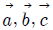
는 공간상의 벡터를 나타내고,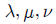
는 스칼라 양을 나타낸다.)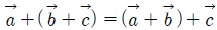
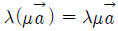
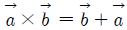
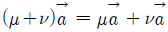
(정답률: 56%)
68. (x, y) 좌표 기반의 2차원 평면에서 다음 직선의 방정식 중 기울기의 절대값이 가장 큰 것은?
- 수평축에서 135도 기울어져 있는 직선
- 점 (10, 10), (25, 55)를 지나는 직선
- 직선의 방정식이 4y = 2x+7인 직선
- x축 절편이 3, y축 절편이 15인 직선
(정답률: 49%)
69. 다음 중 CAD(Computer aided design) 시스템을 사용함으로써 얻을 수 있는 효과로 가장 거리가 먼 것은?
- 제품 설계 시간의 단축
- 구조해석, 응력해석 등이 가능
- 제품 가공 시간의 단축
- 설계 검증의 용이
(정답률: 70%)
70. 빛을 편광시키는 특성을 가진 유기화합물을 이용하여 투과된 빛의 특성을 수정하여 디스플레이 하는 방식으로 CRT 모니터에 비해서는 두께가 얇은 모니터를 만들 수 있으나 시야각이 다소 좁고 백라이트가 필요하며 어느 정도의 두께 이상은 줄일 수 없다는 단점을 가진 이 디스플레이 장치는?
- 플라지마 패널(plasma panel)
- 액정 디스플레이(liquid crystal display)
- 전자 발광 디스플레이(electroluminescent display)
- 래스터 스캔 디스플레이(raster scan display)
(정답률: 72%)
71. 다음 중 B-Rep 모델링에서 토폴로지 요소간에 만족해야 하는 오일러-포앙카레 공식으로 옳은 것은? (단, V는 꼭지점의 개수, E는 모서리의 개수, F는 면 또는 외부 루프의 개수, H는 면상의 구멍 루프의 개수, C는 독립된 셸의 개수, G는 입체를 관통하는 구멍의 개수이다.)
- V + F + E + H = 2(C + G)
- V + F - E + H = 2(C + G)
- V + F - E - H = 2(C - G)
- V - F + E - H = 2(C - G)
(정답률: 46%)
72. 다음 중 서로 다른 CAD 시스템간의 데이터 상호 교환을 위한 표준화 파일형식을 모두 고른 것은?
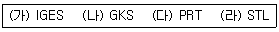
- 가, 나, 다
- 가, 다, 라
- 가, 나, 라
- 나, 다, 라
(정답률: 62%)
73. 서피스 모델링(surface modeling)의 일반적인 특징으로 거리가 먼 것은?
- NC 데이터를 생성 할 수 있다.
- 은선 제거가 불가능하다.
- 질량 등 물리적 성질 계산이 곤란하다.
- 복잡한 형상표현이 가능하다.
(정답률: 62%)
74. 공간상에서 곡면을 작성하고자 한다. 안내선(guide line)과 단면모양(section)으로 만들어지는 곡면은?
- Revolve 곡면
- Sweep 곡면
- Blending 곡면
- Grid 곡면
(정답률: 73%)
75. 래스터 그래픽 장치의 프레임 버퍼(frame buffer)에서 8bit plane을 사용한다면 몇 가지 색상을 동시에 낼 수 있는가?
- 32
- 64
- 128
- 256
(정답률: 64%)
76. 솔리드 모델링의 데이터 구조 중 CSG(constructive solid geometry) 트리구조의 특징에 대한 설명으로 틀린 것은?
- 데이터 구조가 간단하고 데이터의 양이 적어 데이터 구조의 관리가 용이하다.
- CSG 트리로 저장된 솔리드는 항상 구현이 가능한 입체를 나타낸다.
- 화면에 입체의 형상을 나타내는 시간이 짧아 대화식 작업에 적합하다.
- 기본형상(primitive)의 파라미터만 간단히 변경하여 입체 형상을 쉽게 바꿀 수 있다.
(정답률: 51%)
77. CAD 시스템에서 원호를 정의하고자 한다. 다음 중 하나의 원호를 정의내릴 수 없는 경우는?
- 중심점과 원호의 시작점과 끝점, 그리고 시작점에서 원호가 그려지는 방향이 주어질 때
- 중심점과 원호의 시작점, 현의 길이 그리고 시작점에서 원호가 그려지는 방향이 주어질때
- 원호를 이루는 각각의 시작점, 중간점, 끝점이 주어질 때
- 중심점과 원호 반지름의 크기, 그리고 시작점에서 원호가 그려지는 방향이 주어질 때
(정답률: 47%)
78. 3차원 그래픽스 처리를 위한 ISO 국제표준의 하나로서 ISO-IEC TTC 1/SC 24에서 제정한 국제 표준으로 구조체 개념을 가지고 있는 것은?
- PHIGS
- DTD
- SGML
- SASIG
(정답률: 66%)
79. 그림과 같은 꽃병 형상의 도형을 그리기에 가장 적합한 방법은?
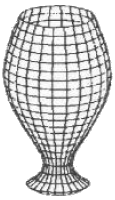
- 오프셋 곡면
- 원추 곡면
- 회전 곡면
- 필릿 곡면
(정답률: 78%)
80. 벡터
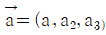
가 존재한다. a1, a2, a3는 x, y, z축 방향의 변위 일 때 벡터의 크기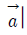
는?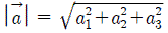
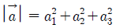
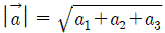
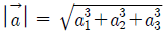
(정답률: 49%)
지름 38mm의 환봉을 지름 32mm으로 절삭하려면 반지름 차이는 3mm이다. 이 반지름 차이를 이동 거리로 환산하면 1등분당 이동 거리인 0.04mm로 나누어주면 된다.
3mm ÷ 0.04mm = 75
따라서, 핸들의 눈금을 75 눈금 돌리면 지름 38mm의 환봉을 지름 32mm으로 절삭할 수 있다. 정답은 "75"이다.